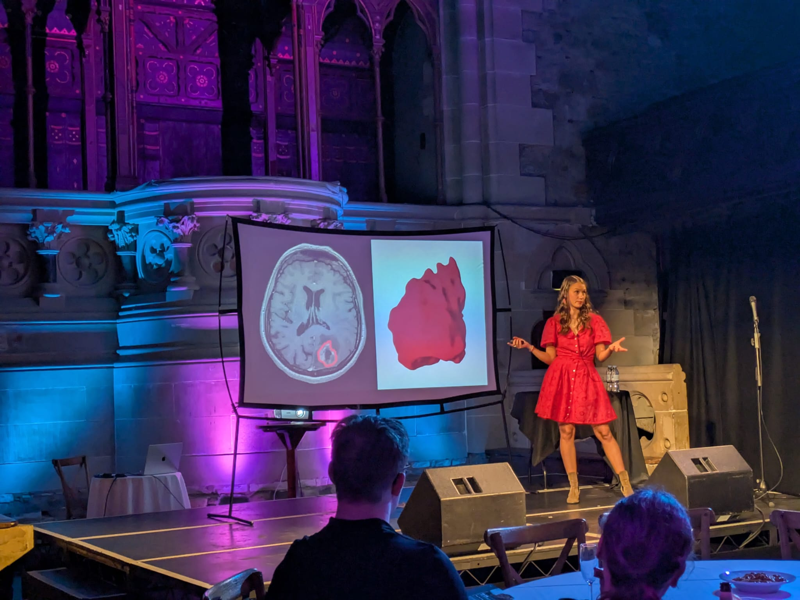
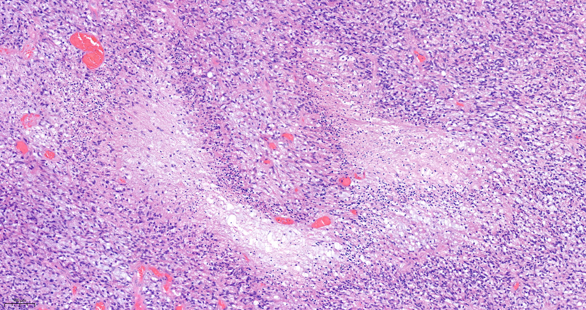
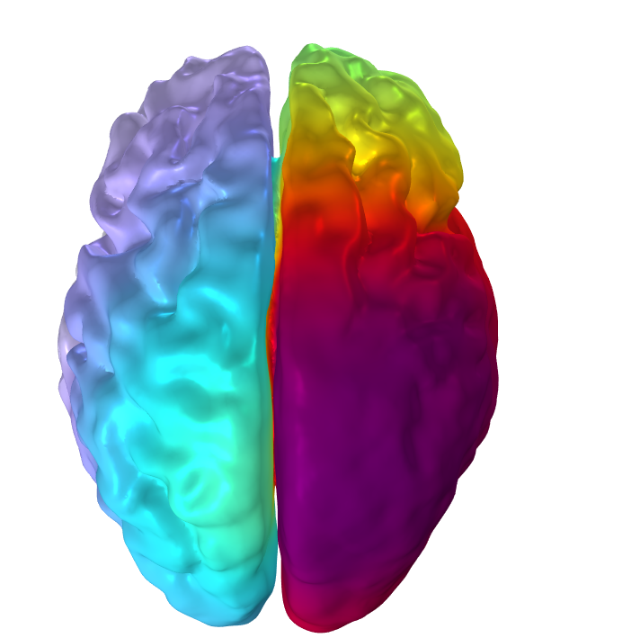

Glioblastoma behaviour and treatment modelling
I develop novel mathematical models of tumour dynamics and drug transport, predicting response to emerging therapies such as electrochemotherapy.

I am a final-year PhD student in Mathematics working at the intersection of mathematical modelling, medical imaging, and oncology. My mission is to improve brain cancer treatment by developing predictive diagnostic tools that support personalised treatment strategies.
I am a final-year PhD student in Mathematics at the University of Glasgow. My research uses mathematical modelling to improve brain cancer treatment, focusing on how tumours respond to conventional and emerging therapies.
My work combines continuum modelling, numerical simulations, and patient-specific medical data, and is carried out in close collaboration with clinicians and international research partners. I aim to bridge the gap between theoretical mathematics and real-world medical challenges, developing models that can inform treatment design and contribute to more effective cancer therapies.
I am passionate about knowledge exchange and public engagement, and I enjoy making complex mathematical ideas accessible and show how mathematics can contribute to meaningful advances in healthcare and improved patient outcomes.

My research combines mathematical modelling, computation, and clinical collaboration to better understand tumour behaviour and improve therapy design.
I develop novel mathematical models of tumour dynamics and drug transport, predicting response to emerging therapies such as electrochemotherapy.
PDE models and asymptotic homogenisation linking microscale tissue structure to macroscale transport behaviour.
MRI-informed models developed with clinicians to support personalised predictions.

Tumour microstructure informing multiscale modelling.

Patient-specific MRI data used to parameterise models.

Simulation of pressure and transport behaviour in tumour tissue.
Science Slam presentation introducing my research on mathematical modelling for brain cancer treatment to a general audience.
Download my full academic CV, including publications, talks, teaching, and interdisciplinary collaborations.